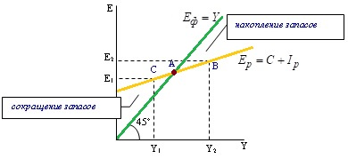
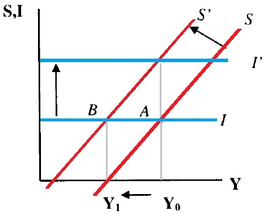
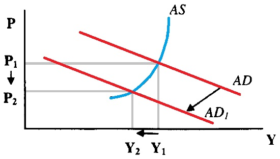

Планируемые расходы (Ер) – это расходы, которые намеревались (планировали) сделать домохозяйства и фирмы Ер = C + Iр. Фактические расходы всегда равны выпуску (C + I = Е = Y ), а планируемые могут быть не равны выпуску. Фактические инвестиции складываются из планируемых инвестиций (planned investment - Iр ) и непредвиденных инвестиции в запасы (unintended inventory investment – Iun ):
I = Iр + Iun .
Pавновесие товарного рынка наступает тогда, когда фактические расходы равны планируемым (Е = Ер) и соответственно планируемые расходы равны выпуску (Ер = Y ). В соответствии с предпосылками модели, совокупный выпуск эквивалентен совокупному доходу, а совокупный доход расходуется на потребление (С ) и сбережения (S ): Y = С + S . Поскольку в состоянии равновесия Y = E = Ер , то Следовательно, при равновесии сбережения равны планируемым инвестициям. А поскольку сбережения являются изъятием из потока расходов и доходов, а инвестиции представляет собой инъекцию в поток расходов и доходов, то в состоянии равновесия инъекции равны изъятиям. Кейнсианский крест графически представлен на рис.6.2.
Кривая фактических расходов представляет собой биссектрису (линию 450 ), поскольку фактические расходы равны выпуску, и любая точка этой кривой соответствует этому условию.

Равновесие расходов и дохода, т.е. равновесие товарного рынка находится в точке пересечения двух кривых (точка А). В этой точке:
1) планируемые расходы равны выпуску (доходу): Ер = Y;
2) фактические расходы равны планируемым расходам: Е = Eр;
3) инъекции равны изъятиям: I = S;
4) планируемые инвестиции равны сбережениям: Iр = S [20, c. 61 - 63].
Парадокс бережливости попытка общества больше сберегать оборачивается таким же или меньшим объемом сбережений. Если прирост сбережений не сопровождается приростом инвестиций, то любая попытка домашних хозяйств больше сберегать окажется тщетной в связи со значительным снижением равновесного ВВП, обусловленным эффектом мультипликатора.
Экономика стартует в точке А (см. рис. 6.3). В ожидании спада домашние хозяйства стремятся побольше сберегать: график сбережений перемещается от S до S’ а инвестиции остаются на том же уровне I. В результате потребительские расходы относительно снижаются, что вызывает эффект мультипликатора и спад совокупного дохода от Y0 до Y1. Так как совокупный доход Y снизился, то и сбережения в точке В окажутся теми же, что и в точке А.

Если одновременно с ростом сбережений от S до S' возрастут и запланированные инвестиции от I до I', то равновесный уровень выпуска остается равным Y0 и спада производства не возникнет. Напротив, в структуре производства будут преобладать инвестиционные товары, что создает хорошие условия для экономического роста, но может относительно ограничить уровень текущего потребления населения. Возникает альтернатива выбора: либо экономический рост в будущем при относительном ограничении текущего потребления, либо отказ от ограничений в потреблении ценой ухудшения условий долгосрочного экономического роста.
Рост сбережений может оказать на экономику антиинфляционное воздействие в условиях, близких к полной занятости ресурсов: спад потребления и следующее за ним сокращение совокупных расходов, занятости и выпуска (с эффектом мультипликатора) ограничивают давление инфляции спроса - совокупный спрос снижается от AD до AD1, что сопровождается спадом производства от Y1 до Y2 и снижением уровня цен от Р1 до P2 (см. рис. 6.4).

Модель Кейнсианского креста не позволяет иллюстрировать процесс изменения уровня цен Р, так как предполагает фиксированные цены. Крест Кейнса конкретизирует модель AD-AS для целей краткосрочного макроэкономического анализа с "жесткими" ценами и не может быть использован для исследования долгосрочных последствий макроэкономической политики, связанных с ростом или снижением уровня инфляции.